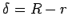
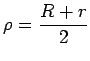
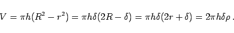

Inhalt Index DeskTop Bronstein

 Geometrie Stereometrie Körper, die durch gekrümmte Flächen begrenzt sind Zylinderförmige Körper
Geometrie Stereometrie Körper, die durch gekrümmte Flächen begrenzt sind Zylinderförmige Körper


Mit den Bezeichnungen R für den äußeren Radius, r für den inneren Radius,  für die Radiendifferenz und  für den mittleren Radius gilt:
|  | (3.151) |